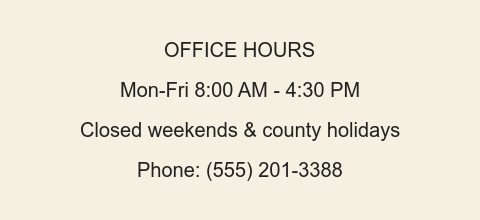

Harmon County Department of Public Records
The Department of Public Records maintains vital records, property filings, and administrative documents for Harmon County residents. Use the links above to find a service, review our public records law, or contact a records office near you.
Office Hours & Contact

For the most current holiday closures, please check with your local office directly.
What We Do
We process requests for birth, death, and marriage certificates, property deed copies, and general public records requests under the Harmon County Open Records Act. See our Services page for a full list, or read the Public Records Law for the statutory basis of our work.